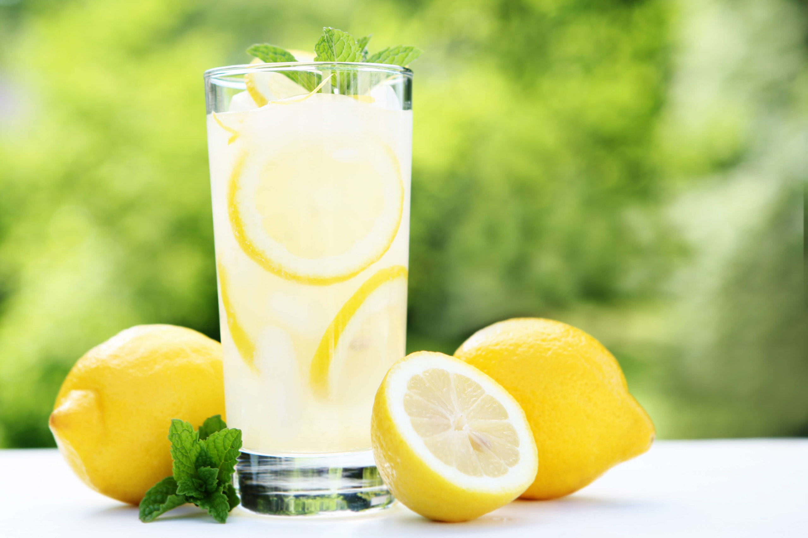

Perfect Lemonade

Description
Simple and easy method for perfect lemonade every time! With simple syrup and fresh lemon juice.
- 1 cup sugar (can reduce to 3/4 cup)
- 1 cup water (for the simple syrup)
- 1 cup lemon juice
- 2 to 3 cups cold water (to dilute)
Steps
- Place the sugar and water in a small saucepan and bring to a simmer. Stir so that the sugar dissolves completely and remove from heat.
- While the water is heating for the simple syrup, juice your lemons. Depending on the size of the lemons, 4 to 6 of them should be enough for one cup of juice.
- Pour the juice and the simple syrup sugar water into a serving pitcher. Add 2 to 3 cups of cold water and taste. Add more water if you would like it to be more diluted (though note that when you add ice, it will melt and naturally dilute the lemonade).
If the lemonade is a little sweet for your taste, add a little more straight lemon juice to it.
- Refrigerate 30 to 40 minutes.
Serve with ice, sliced lemons.
Note
For more intense lemon flavor, grate the zest from one fresh lemon and add the zest to the simple syrup as you are making it. Once the sugar has dissolved in the water remove from heat and let the zest seep in the simple syrup for several minutes, then strain out the zest when you add the simple syrup to the lemon juice.